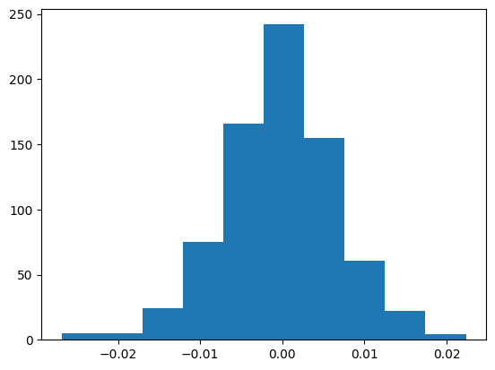

Figure 1: Mean Squared Error as a function of the samples per site and sites#
import numpy as np
import pandas as pd
import matplotlib.pyplot as plt
from scipy.ndimage.filters import gaussian_filter
import matplotlib.colors as colors
import smpsite as smp
%matplotlib inline
/tmp/ipykernel_2128/2142690695.py:4: DeprecationWarning: Please use `gaussian_filter` from the `scipy.ndimage` namespace, the `scipy.ndimage.filters` namespace is deprecated.
from scipy.ndimage.filters import gaussian_filter
Figure#
df = pd.read_csv('../../outputs/fig1a_10000sim_summary.csv')
# Compute the root of the mean square error
df['error_angle_S'] = df['error_angle_S2'] ** .5
df
| Unnamed: 0 | Unnamed: 1 | error_angle_mean | error_angle_median | error_angle_25 | error_angle_75 | error_angle_95 | error_angle_std | error_angle_S2 | error_vgp_scatter | ... | n0 | kappa_within_site | site_lat | site_long | outlier_rate | secular_method | kappa_secular | ignore_outliers | total_simulations | error_angle_S | |
|---|---|---|---|---|---|---|---|---|---|---|---|---|---|---|---|---|---|---|---|---|---|
| 0 | 0 | 0 | 4.147206 | 3.912595 | 2.484667 | 5.486852 | 8.148171 | 2.186134 | 21.978023 | 3.186314 | ... | 2 | 50 | 30.0 | 0.0 | 0.0 | G | NaN | False | 10000 | 4.688072 |
| 1 | 1 | 0 | 4.725067 | 4.445762 | 2.876439 | 6.279026 | 9.143663 | 2.455932 | 28.357256 | 2.932066 | ... | 27 | 50 | 30.0 | 0.0 | 0.0 | G | NaN | False | 10000 | 5.325153 |
| 2 | 2 | 0 | 3.980893 | 3.739991 | 2.413162 | 5.281213 | 7.779722 | 2.085578 | 20.196707 | 2.438957 | ... | 19 | 50 | 30.0 | 0.0 | 0.0 | G | NaN | False | 10000 | 4.494075 |
| 3 | 3 | 0 | 3.233462 | 3.013762 | 1.950203 | 4.281603 | 6.409835 | 1.715021 | 13.396281 | 5.554613 | ... | 1 | 50 | 30.0 | 0.0 | 0.0 | G | NaN | False | 10000 | 3.660093 |
| 4 | 4 | 0 | 2.158836 | 2.034649 | 1.311973 | 2.846312 | 4.181181 | 1.125675 | 5.927591 | 1.309937 | ... | 8 | 50 | 30.0 | 0.0 | 0.0 | G | NaN | False | 10000 | 2.434664 |
| ... | ... | ... | ... | ... | ... | ... | ... | ... | ... | ... | ... | ... | ... | ... | ... | ... | ... | ... | ... | ... | ... |
| 754 | 754 | 0 | 2.649010 | 2.473473 | 1.605169 | 3.503009 | 5.164014 | 1.387456 | 8.942095 | 1.581143 | ... | 11 | 50 | 30.0 | 0.0 | 0.0 | G | NaN | False | 10000 | 2.990334 |
| 755 | 755 | 0 | 2.606820 | 2.440106 | 1.561114 | 3.462770 | 5.143039 | 1.368585 | 8.668347 | 1.647996 | ... | 5 | 50 | 30.0 | 0.0 | 0.0 | G | NaN | False | 10000 | 2.944206 |
| 756 | 756 | 0 | 2.316476 | 2.175341 | 1.420605 | 3.062309 | 4.489364 | 1.200979 | 6.808266 | 1.450202 | ... | 5 | 50 | 30.0 | 0.0 | 0.0 | G | NaN | False | 10000 | 2.609265 |
| 757 | 757 | 0 | 6.289641 | 5.932100 | 3.841007 | 8.335166 | 12.206067 | 3.266839 | 50.230759 | 4.174381 | ... | 23 | 50 | 30.0 | 0.0 | 0.0 | G | NaN | False | 10000 | 7.087366 |
| 758 | 758 | 0 | 4.291253 | 4.034847 | 2.561794 | 5.735769 | 8.389042 | 2.254435 | 23.496822 | 2.622815 | ... | 12 | 50 | 30.0 | 0.0 | 0.0 | G | NaN | False | 10000 | 4.847352 |
759 rows × 22 columns
We define a function that will make the heatmap. Ideally, we want this to be part of smpsite under the plotting tools. However, since each subfigure has quite some level of customization, we leave it like this for now.
def find_nearest(A, a0):
"""
Function to round all the values in a generic numpy array A to the closest value in another array n0.
"""
a = A.flatten()
idx = ((np.tile(a, (len(a0),1)).T - a0)**2).argmin(axis=1)
return a0[idx].reshape(A.shape)
def plot_angle_error(df, df_in=None, save_plot=True):
fig, axes = plt.subplots()
fig.set_size_inches(14, 20)
# axes.set_aspect("equal")
caxes = axes.inset_axes([1.04, 0.06, 0.03, 0.4])
caxes_in = axes.inset_axes([1.04, 0.58, 0.03, 0.4])
def contour_plot(df_, ax, cax, bounds, cmap, cbar_title, make_levels=True, make_contours=True, color_max=16, ticks=None, xmax=40):
X = df_.columns.values
Y = df_.index.values
Z = df_.values
Z_smooth = gaussian_filter(Z, 1.0)
Z = np.clip(Z, a_min=0.0, a_max=color_max)
# Z_rounded = np.rint(Z)
mid_points = (bounds[1:] + bounds[:-1]) / 2
Z_rounded = find_nearest(Z, mid_points)
Z_rounded[np.isnan(Z)] = 0
x,y = np.meshgrid(X, Y)
if make_levels:
N = x * y
levels = np.hstack([np.arange(0.0, 100.0, 20), np.arange(100.0, 310, 40.)])
IsoNLines = ax.contour(x, y, N, 10, colors='white', linestyles="dashed", levels=levels)
ax.clabel(IsoNLines, inline=True, fontsize=10)
ColorGrid = ax.pcolormesh(x, y, Z_rounded, cmap=cmap, norm=colors.LogNorm(vmin=2, vmax=color_max), alpha=0.8)
if make_contours:
ContourLines = ax.contour(x, y, Z, 10, colors='k', levels=bounds)
ax.clabel(ContourLines, inline=True, fontsize=14)
ax.set_xlim([0, 20])
ax.set_ylim([0, 40])
ax.set_xlabel(None)
ax.set_ylabel(None)
ax.set_xticks([1,2,3,4,5,6,7,10,15])
ax.set_yticks(ticks)
ax.xaxis.set_tick_params(labelsize=16)
ax.yaxis.set_tick_params(labelsize=16)
cbar = plt.colorbar(ColorGrid, cax=cax, boundaries=bounds, orientation='vertical')#, fraction=0.02, location='right')
cbar.set_label(cbar_title, rotation=270, fontsize=20, labelpad=20)
return None
# Now for the scatter plot
def contour_plot_scatter(df_, ax, cax, bounds, cmap, cbar_title, make_levels=True, make_contours=True, color_max=16):
X = df_.columns.values
Y = df_.index.values
Z = df_.values
Z_smooth = gaussian_filter(Z, 1.0)
Z = np.clip(Z, a_min=0.0, a_max=color_max)
# Z_rounded = np.rint(Z)
mid_points = (bounds[1:] + bounds[:-1]) / 2
Z_rounded = find_nearest(Z, mid_points)
Z_rounded[np.isnan(Z)] = 0
x,y = np.meshgrid(X, Y)
if make_levels:
N = x * y
levels = np.hstack([np.arange(0.0, 100.0, 20), np.arange(100.0, 310, 40.)])
IsoNLines = ax.contour(x, y, N, 10, colors='white', linestyles="dashed", levels=levels)
ax.clabel(IsoNLines, inline=True, fontsize=10)
ColorGrid = ax.pcolormesh(x, y, Z_rounded, cmap=cmap, norm=colors.LogNorm(vmin=1, vmax=color_max), alpha=0.8)
if make_contours:
xmin=1
ContourLines = ax.contour(x[:,xmin:], y[:, xmin:], Z[:, xmin:], 10, colors='k', levels=bounds)
ax.clabel(ContourLines, inline=True, fontsize=14)
ax.set_xlim([0, 20])
ax.set_ylim([0, 80])
ax.set_xlabel('Number of Samples per Site ($n_0$)', fontsize=22)
ax.set_ylabel('Number of Sites (N)', fontsize=22)
ax.set_xticks([1,2,3,4,5,6,7,10,15])
ax.set_yticks([1, 4, 7, 10, 15, 20, 30, 40])
ax.xaxis.set_tick_params(labelsize=16)
ax.yaxis.set_tick_params(labelsize=16)
cbar = plt.colorbar(ColorGrid, cax=cax, boundaries=bounds, orientation='vertical')#, fraction=0.02, location='right')
cbar.set_label(cbar_title, rotation=270, fontsize=20, labelpad=20)
return None
axin = axes.inset_axes([0.0, 0.54, 1, .5])
contour_plot_scatter(df_in,
axes,
cax=caxes,
bounds=np.hstack([np.arange(0.0, 4.0, 0.5), np.arange(5.0, 12, 2.0)]),
cmap='inferno',
cbar_title="RMSE for VGP scatter (degrees)",
make_levels=True,
make_contours=True,
color_max=10)
contour_plot(df,
axin,
cax=caxes_in,
bounds=np.hstack([np.arange(0.0, 5.0, 0.5), np.arange(5.0, 8, 1.0), np.arange(8.0, 16.0, 2.0)]),
cmap='viridis',
cbar_title="RMSE for pole estimation (degrees)",
color_max=14,
ticks=[1, 4, 7, 10, 15, 20, 30, 40])
axes.spines[['right', 'top']].set_visible(False)
axin.spines[['right', 'top']].set_visible(False)
if save_plot:
plt.savefig("Figure1.png", dpi=300, format="png", bbox_inches='tight')
plt.savefig("Figure1.pdf", format="pdf", bbox_inches='tight')
else:
plt.show()
all_kappa = np.unique(df.kappa_within_site.values)
df_filter = df[(df.site_lat==30)
& (df.kappa_within_site==50)
& (df.outlier_rate==0.00)
& (df.ignore_outliers==False)]
df_pole = df_filter[df_filter.n0 <= 20].pivot('N', 'n0', 'error_angle_S')
df_scatter = df_filter[df_filter.n0 <= 20].pivot('N', 'n0', 'error_vgp_scatter')
plot_angle_error(df_pole,
df_scatter,
save_plot=True)
---------------------------------------------------------------------------
TypeError Traceback (most recent call last)
Cell In[6], line 1
----> 1 df_pole = df_filter[df_filter.n0 <= 20].pivot('N', 'n0', 'error_angle_S')
2 df_scatter = df_filter[df_filter.n0 <= 20].pivot('N', 'n0', 'error_vgp_scatter')
4 plot_angle_error(df_pole,
5 df_scatter,
6 save_plot=True)
TypeError: pivot() takes 1 positional argument but 4 were given
Theoretical comparision#
We can compare this with the theoretical approximations we obtained.
df_filter["error_kappa_theoretical"] = df_filter.apply(lambda row: smp.kappa_theoretical(smp.Params(N=row.N,
n0=row.n0,
kappa_within_site=row.kappa_within_site,
site_lat=row.site_lat,
site_long=row.site_long,
outlier_rate=row.outlier_rate,
secular_method=row.secular_method,
kappa_secular=row.kappa_secular)), axis=1)
df_filter["error_angle_theoretical"] = df_filter.apply(lambda row: smp.kappa2angular(row.error_kappa_theoretical), axis=1)
df_filter["error_angle_S"] = df_filter["error_angle_S2"] ** .5
df_filter["error_theoretical_relative"] = df_filter.apply(lambda row: (row.error_angle_theoretical-row.error_angle_S) / row.error_angle_S, axis=1)
df_filter[['N', 'n0', 'error_angle_mean', 'error_angle_S', 'error_angle_theoretical', 'error_theoretical_relative']]
| N | n0 | error_angle_mean | error_angle_S | error_angle_theoretical | error_theoretical_relative | |
|---|---|---|---|---|---|---|
| 0 | 13 | 2 | 4.147206 | 4.688072 | 4.679167218230616 | -0.001900 |
| 1 | 7 | 27 | 4.725067 | 5.325153 | 5.362703627902144 | 0.007052 |
| 2 | 10 | 19 | 3.980893 | 4.494075 | 4.5030198969397155 | 0.001990 |
| 3 | 29 | 1 | 3.233462 | 3.660093 | 3.60692015467896 | -0.014528 |
| 4 | 37 | 8 | 2.158836 | 2.434664 | 2.435654194091217 | 0.000407 |
| ... | ... | ... | ... | ... | ... | ... |
| 754 | 24 | 11 | 2.649010 | 2.990334 | 2.9805563914003264 | -0.003270 |
| 755 | 27 | 5 | 2.606820 | 2.944206 | 2.9269658083257255 | -0.005856 |
| 756 | 34 | 5 | 2.316476 | 2.609265 | 2.608296370854666 | -0.000371 |
| 757 | 4 | 23 | 6.289641 | 7.087366 | 7.1190110570614795 | 0.004465 |
| 758 | 9 | 12 | 4.291253 | 4.847352 | 4.815397074275693 | -0.006592 |
759 rows × 6 columns
We can plot the relative error between the theory and the numerical simulation to see that they differ ~1%.
plt.hist(df_filter.error_theoretical_relative);
